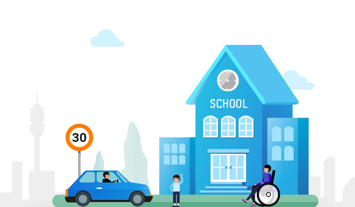

아이를 지키는
착한 드라이빙 캠페인
교직원공제회와 함께하는
제한 속도 30km/h, 스쿨존 함께 지켜요.

- 나의 착한 드라이빙
-
주행점수
100점
-
주행거리
360,535km
미션에 5만명 이상 참여하시면,
어린이들이 보호받는 안전한 세상을 만들기 위해
The-K한국교직원공제회와 세이프키즈코리아가
초등학교 교통 안전 시설물 설치 사업에
1,000만원을 지원합니다.
미션 기간 동안 과속거리, 급감속, 급가속
횟수가 적고 운전점수가 높은 사용자 1,000분께
SK 모바일 주유권(3만원)을 드립니다.
- 미션 기간 7.10 ~ 7.22
- 당첨자 발표 7.25 오후 5시
동점자의 경우 주행거리가 먼
사용자일 수록 당첨 확률이 높아집니다.
과속, 급가속, 급감속 ZERO 50km 주행 미션 참여중!
6월 21일 미션 결과를 확인해 주세요.